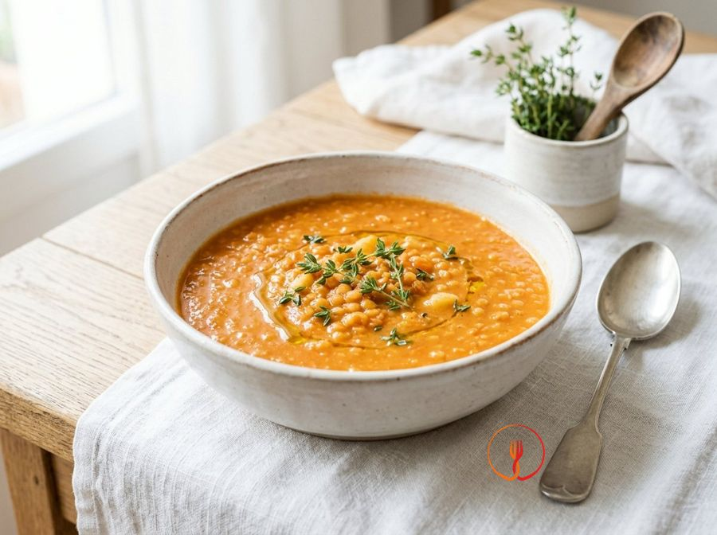

Baby Lentils with Tomato and Thyme
A creamy and nutritious preparation based on split lentils, ideal for little ones' digestion. The tomato and thyme provide a fragrant note without making the dish heavy.
Ingredients
- Red split lentils120 g
- Potatoes100 g
- Carrots80 g
- Tomato passata [Smooth, sieved tomato purée]100 ml
- Water400 ml
- Extra virgin olive oil15 ml
- Dried thyme1 pinch
Allergens
None of the 14 main allergens in the ingredients.
Method
- Begin by thoroughly rinsing the 120g of split red lentils under cold running water using a fine-mesh sieve. Agitate them with your fingers until the water runs completely clear, removing any dust or starchy residue. This process takes about 2 minutes and is crucial for a clean, professional flavour. The result will be glossy lentils ready for the pot. Chef's tip: never skip this step, as excess surface starch can make the final dish unpleasantly sticky rather than creamy.
- Take the 100g of potatoes and 80g of carrots, peel them carefully, and dice them into tiny cubes of about 0.5 cm using a sharp chef's knife on a stable board. Precise dicing is essential for this 'baby' recipe to ensure the vegetables cook quickly and integrate perfectly with the lentils. Aim for uniform size so every cube reaches the same tenderness simultaneously. You will achieve a fine, colourful dice that provides texture. Chef's tip: if hand-cutting is difficult, you can coarsely grate the carrots, but cubed potatoes release starch more effectively for natural creaminess.
- Pour 400ml of water into a heavy-bottomed saucepan and immediately add the prepared potato and carrot cubes. Turn the heat to medium and bring to a boil; once boiling, allow the vegetables to pre-cook for about 10 minutes. This technique ensures the root vegetables begin to soften before adding the pulses, which have different cooking rates. You will see the water change colour slightly and the vegetables become translucent. Chef's tip: always start with cold water to extract maximum flavour and nutrients, effectively creating an instant vegetable stock.
- Once the vegetables are partially cooked, add the 120g of rinsed lentils and 100ml of tomato passata to the pan. Stir gently with a wooden spoon to distribute the tomato evenly and ensure the lentils are fully submerged. Maintain medium heat until the mixture returns to a steady simmer. The preparation will initially look liquid and bright red. Chef's tip: add the passata only at this stage because tomato acidity can toughen the cell walls of vegetables if added too early, slowing down the softening process.
- Reduce the heat to low, partially cover with a lid, and simmer gently for 15-20 minutes, stirring occasionally. During this time, the split red lentils will break down, naturally thickening the sauce alongside the potato starch. You should achieve a thick, velvety consistency similar to a hearty soup or a rustic purée. The aroma will become sweet and comforting. Chef's tip: if you notice any foam rising to the surface, skim it off with a slotted spoon for a more delicate flavour and better digestibility.
- Towards the end of the cooking time, take a pinch of dried thyme and stir it into the preparation for one minute before turning off the heat. This herb has an intense fragrance that pairs beautifully with pulses but is delicate; adding it at the end prevents prolonged heat from dissipating its essential oils or turning the taste bitter. You will immediately notice a fresh, herbaceous note. Chef's tip: rub the thyme between your palms before adding; the friction heat will instantly awaken the aromas trapped in the dried leaves.
- Turn off the heat and check the final consistency: it should be soft and creamy, perfect for spooning. If the mixture appears too dry or stiff, stir in one or two tablespoons of hot water (or vegetable stock if available) and mix vigorously until it reaches the desired fluidity. The final colour should be a warm, homogenous reddish-orange. Chef's tip: remember that lentils continue to absorb liquid even after the heat is off, so keep them slightly looser than your desired serving thickness.
- Finish the dish by adding 15ml of extra virgin olive oil 'a crudo' (raw) directly into the pan or over individual portions. Use a high-quality oil, preferably with a light fruitiness, and stir briefly to emulsify it into the lentil cream. This cold addition preserves all heat-sensitive vitamins and polyphenols while giving the dish an inviting sheen. The meal is now fragrant, glossy, and ready to be served lukewarm. Chef's tip: never heat the oil with the other ingredients in this recipe, as the final addition acts as a natural flavour enhancer without the need for excess salt.
Nutrition facts (estimate)
| Per serving (165 g) | Per 100 g | |
|---|---|---|
| Energy | 640 kJ / 153 kcal | 388 kJ / 93 kcal |
| Protein | 8.5 g | 5.2 g |
| Carbohydrates | 21.3 g | 12.9 g |
| of which sugars | 2.8 g | 1.7 g |
| Fat | 3.8 g | 2.3 g |
| of which saturates | 0.6 g | 0.4 g |
| Fibre | 4.8 g | 2.9 g |
| Salt | 0.03 g | 0.0 g |
AI estimates based on average CREA / USDA data: indicative only, not a substitute for medical or dietitian advice.
Open the recipe in the app for the shopping list, ingredient sheets and nearby shops.